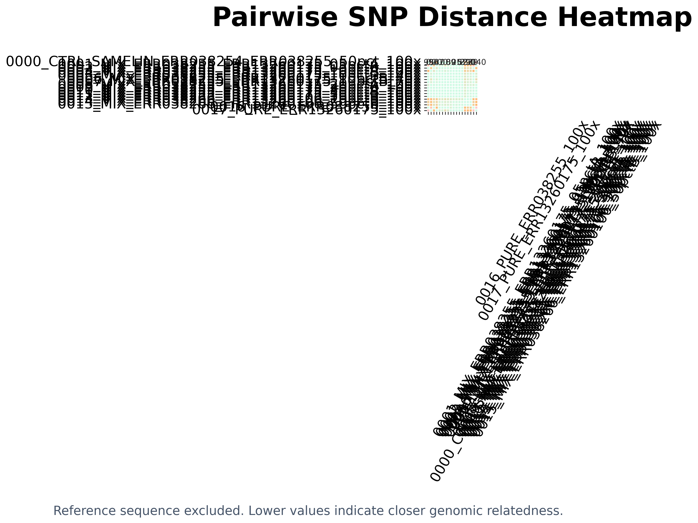

This section summarizes pairwise SNP distances calculated directly from the MTBC core genome alignment after excluding reference/non-sample sequences.
Reference/non-sample sequences are excluded. Lower SNP distances indicate closer genomic relatedness.

| Sample 1 | Sample 2 | SNP distance | Comparable sites | Interpretation |
|---|---|---|---|---|
| 0000_CTRL_SAMELIN_ERR038254_ERR038255_50pct_100x | 0001_MIX_ERR038255_ERR13260175_05pctA_100x | 996 | 3935829 | Not interpretable: mixed-strain signal (0001_MIX_ERR038255_ERR13260175_05pctA_100x is flagged 'Possible mixed infection' by TB-Profiler). The positions distinguishing the strains are excluded from this comparison, so the SNP distance understates divergence. |
| 0000_CTRL_SAMELIN_ERR038254_ERR038255_50pct_100x | 0002_MIX_ERR038255_ERR13260175_05pctB_100x | 0 | 3957642 | Not interpretable: mixed-strain signal (0002_MIX_ERR038255_ERR13260175_05pctB_100x is flagged 'Possible mixed infection' by TB-Profiler). The positions distinguishing the strains are excluded from this comparison, so the SNP distance understates divergence. |
| 0000_CTRL_SAMELIN_ERR038254_ERR038255_50pct_100x | 0003_MIX_ERR038255_ERR13260175_10pctA_100x | 547 | 3941234 | Not interpretable: mixed-strain signal (0003_MIX_ERR038255_ERR13260175_10pctA_100x is flagged 'Possible mixed infection' by TB-Profiler). The positions distinguishing the strains are excluded from this comparison, so the SNP distance understates divergence. |
| 0000_CTRL_SAMELIN_ERR038254_ERR038255_50pct_100x | 0004_MIX_ERR038255_ERR13260175_10pctB_100x | 0 | 3957841 | Not interpretable: mixed-strain signal (0004_MIX_ERR038255_ERR13260175_10pctB_100x is flagged 'Possible mixed infection' by TB-Profiler). The positions distinguishing the strains are excluded from this comparison, so the SNP distance understates divergence. |
| 0000_CTRL_SAMELIN_ERR038254_ERR038255_50pct_100x | 0005_MIX_ERR038255_ERR13260175_10pctB_140x | 0 | 3958666 | Not interpretable: mixed-strain signal (0005_MIX_ERR038255_ERR13260175_10pctB_140x is flagged 'Possible mixed infection' by TB-Profiler). The positions distinguishing the strains are excluded from this comparison, so the SNP distance understates divergence. |
| 0000_CTRL_SAMELIN_ERR038254_ERR038255_50pct_100x | 0006_MIX_ERR038255_ERR13260175_10pctB_40x | 0 | 3890951 | Not interpretable: mixed-strain signal (0006_MIX_ERR038255_ERR13260175_10pctB_40x is flagged 'Possible mixed infection' by TB-Profiler). The positions distinguishing the strains are excluded from this comparison, so the SNP distance understates divergence. |
| 0000_CTRL_SAMELIN_ERR038254_ERR038255_50pct_100x | 0007_MIX_ERR038255_ERR13260175_10pctB_70x | 0 | 3952434 | Not interpretable: mixed-strain signal (0007_MIX_ERR038255_ERR13260175_10pctB_70x is flagged 'Possible mixed infection' by TB-Profiler). The positions distinguishing the strains are excluded from this comparison, so the SNP distance understates divergence. |
| 0000_CTRL_SAMELIN_ERR038254_ERR038255_50pct_100x | 0008_MIX_ERR038255_ERR13260175_20pctA_100x | 89 | 3954623 | Not interpretable: mixed-strain signal (0008_MIX_ERR038255_ERR13260175_20pctA_100x is flagged 'Possible mixed infection' by TB-Profiler). The positions distinguishing the strains are excluded from this comparison, so the SNP distance understates divergence. |
| 0000_CTRL_SAMELIN_ERR038254_ERR038255_50pct_100x | 0009_MIX_ERR038255_ERR13260175_20pctB_100x | 0 | 3958372 | Not interpretable: mixed-strain signal (0009_MIX_ERR038255_ERR13260175_20pctB_100x is flagged 'Possible mixed infection' by TB-Profiler). The positions distinguishing the strains are excluded from this comparison, so the SNP distance understates divergence. |
| 0000_CTRL_SAMELIN_ERR038254_ERR038255_50pct_100x | 0010_MIX_ERR038255_ERR13260175_30pctA_100x | 25 | 3957655 | Not interpretable: mixed-strain signal (0010_MIX_ERR038255_ERR13260175_30pctA_100x is flagged 'Possible mixed infection' by TB-Profiler). The positions distinguishing the strains are excluded from this comparison, so the SNP distance understates divergence. |
| 0000_CTRL_SAMELIN_ERR038254_ERR038255_50pct_100x | 0011_MIX_ERR038255_ERR13260175_30pctB_100x | 0 | 3958621 | Not interpretable: mixed-strain signal (0011_MIX_ERR038255_ERR13260175_30pctB_100x is flagged 'Possible mixed infection' by TB-Profiler). The positions distinguishing the strains are excluded from this comparison, so the SNP distance understates divergence. |
| 0000_CTRL_SAMELIN_ERR038254_ERR038255_50pct_100x | 0012_MIX_ERR038255_ERR13260175_50pctB_100x | 2 | 3958720 | Not interpretable: mixed-strain signal (0012_MIX_ERR038255_ERR13260175_50pctB_100x is flagged 'Possible mixed infection' by TB-Profiler). The positions distinguishing the strains are excluded from this comparison, so the SNP distance understates divergence. |
| 0000_CTRL_SAMELIN_ERR038254_ERR038255_50pct_100x | 0013_MIX_ERR038266_ERR13260106_10pctB_100x | 527 | 3944315 | Not interpretable: mixed-strain signal (0013_MIX_ERR038266_ERR13260106_10pctB_100x is flagged 'Possible mixed infection' by TB-Profiler). The positions distinguishing the strains are excluded from this comparison, so the SNP distance understates divergence. |
| 0000_CTRL_SAMELIN_ERR038254_ERR038255_50pct_100x | 0014_MIX_ERR038266_ERR13260106_20pctB_100x | 390 | 3956661 | Not interpretable: mixed-strain signal (0014_MIX_ERR038266_ERR13260106_20pctB_100x is flagged 'Possible mixed infection' by TB-Profiler). The positions distinguishing the strains are excluded from this comparison, so the SNP distance understates divergence. |
| 0000_CTRL_SAMELIN_ERR038254_ERR038255_50pct_100x | 0015_MIX_ERR038266_ERR13260106_50pctB_100x | 389 | 3959157 | Not interpretable: mixed-strain signal (0015_MIX_ERR038266_ERR13260106_50pctB_100x is flagged 'Possible mixed infection' by TB-Profiler). The positions distinguishing the strains are excluded from this comparison, so the SNP distance understates divergence. |
| 0000_CTRL_SAMELIN_ERR038254_ERR038255_50pct_100x | 0016_PURE_ERR038255_100x | 0 | 3955305 | Genomically close; review epidemiological linkage |
| 0000_CTRL_SAMELIN_ERR038254_ERR038255_50pct_100x | 0017_PURE_ERR13260175_100x | 1140 | 3935648 | Not clustered by SNP threshold |
| 0001_MIX_ERR038255_ERR13260175_05pctA_100x | 0002_MIX_ERR038255_ERR13260175_05pctB_100x | 435 | 3956850 | Not interpretable: mixed-strain signal (0001_MIX_ERR038255_ERR13260175_05pctA_100x is flagged 'Possible mixed infection' by TB-Profiler; 0002_MIX_ERR038255_ERR13260175_05pctB_100x is flagged 'Possible mixed infection' by TB-Profiler). The positions distinguishing the strains are excluded from this comparison, so the SNP distance understates divergence. |
| 0001_MIX_ERR038255_ERR13260175_05pctA_100x | 0003_MIX_ERR038255_ERR13260175_10pctA_100x | 0 | 3999296 | Not interpretable: mixed-strain signal (0001_MIX_ERR038255_ERR13260175_05pctA_100x is flagged 'Possible mixed infection' by TB-Profiler; 0003_MIX_ERR038255_ERR13260175_10pctA_100x is flagged 'Possible mixed infection' by TB-Profiler). The positions distinguishing the strains are excluded from this comparison, so the SNP distance understates divergence. |
| 0001_MIX_ERR038255_ERR13260175_05pctA_100x | 0004_MIX_ERR038255_ERR13260175_10pctB_100x | 74 | 3968805 | Not interpretable: mixed-strain signal (0001_MIX_ERR038255_ERR13260175_05pctA_100x is flagged 'Possible mixed infection' by TB-Profiler; 0004_MIX_ERR038255_ERR13260175_10pctB_100x is flagged 'Possible mixed infection' by TB-Profiler). The positions distinguishing the strains are excluded from this comparison, so the SNP distance understates divergence. |
| 0001_MIX_ERR038255_ERR13260175_05pctA_100x | 0005_MIX_ERR038255_ERR13260175_10pctB_140x | 40 | 3979491 | Not interpretable: mixed-strain signal (0001_MIX_ERR038255_ERR13260175_05pctA_100x is flagged 'Possible mixed infection' by TB-Profiler; 0005_MIX_ERR038255_ERR13260175_10pctB_140x is flagged 'Possible mixed infection' by TB-Profiler). The positions distinguishing the strains are excluded from this comparison, so the SNP distance understates divergence. |
| 0001_MIX_ERR038255_ERR13260175_05pctA_100x | 0006_MIX_ERR038255_ERR13260175_10pctB_40x | 201 | 3873544 | Not interpretable: mixed-strain signal (0001_MIX_ERR038255_ERR13260175_05pctA_100x is flagged 'Possible mixed infection' by TB-Profiler; 0006_MIX_ERR038255_ERR13260175_10pctB_40x is flagged 'Possible mixed infection' by TB-Profiler). The positions distinguishing the strains are excluded from this comparison, so the SNP distance understates divergence. |
| 0001_MIX_ERR038255_ERR13260175_05pctA_100x | 0007_MIX_ERR038255_ERR13260175_10pctB_70x | 101 | 3950349 | Not interpretable: mixed-strain signal (0001_MIX_ERR038255_ERR13260175_05pctA_100x is flagged 'Possible mixed infection' by TB-Profiler; 0007_MIX_ERR038255_ERR13260175_10pctB_70x is flagged 'Possible mixed infection' by TB-Profiler). The positions distinguishing the strains are excluded from this comparison, so the SNP distance understates divergence. |
| 0001_MIX_ERR038255_ERR13260175_05pctA_100x | 0008_MIX_ERR038255_ERR13260175_20pctA_100x | 0 | 3998448 | Not interpretable: mixed-strain signal (0001_MIX_ERR038255_ERR13260175_05pctA_100x is flagged 'Possible mixed infection' by TB-Profiler; 0008_MIX_ERR038255_ERR13260175_20pctA_100x is flagged 'Possible mixed infection' by TB-Profiler). The positions distinguishing the strains are excluded from this comparison, so the SNP distance understates divergence. |
| 0001_MIX_ERR038255_ERR13260175_05pctA_100x | 0009_MIX_ERR038255_ERR13260175_20pctB_100x | 1 | 3984659 | Not interpretable: mixed-strain signal (0001_MIX_ERR038255_ERR13260175_05pctA_100x is flagged 'Possible mixed infection' by TB-Profiler; 0009_MIX_ERR038255_ERR13260175_20pctB_100x is flagged 'Possible mixed infection' by TB-Profiler). The positions distinguishing the strains are excluded from this comparison, so the SNP distance understates divergence. |
| 0001_MIX_ERR038255_ERR13260175_05pctA_100x | 0010_MIX_ERR038255_ERR13260175_30pctA_100x | 0 | 3997728 | Not interpretable: mixed-strain signal (0001_MIX_ERR038255_ERR13260175_05pctA_100x is flagged 'Possible mixed infection' by TB-Profiler; 0010_MIX_ERR038255_ERR13260175_30pctA_100x is flagged 'Possible mixed infection' by TB-Profiler). The positions distinguishing the strains are excluded from this comparison, so the SNP distance understates divergence. |
| 0001_MIX_ERR038255_ERR13260175_05pctA_100x | 0011_MIX_ERR038255_ERR13260175_30pctB_100x | 0 | 3990691 | Not interpretable: mixed-strain signal (0001_MIX_ERR038255_ERR13260175_05pctA_100x is flagged 'Possible mixed infection' by TB-Profiler; 0011_MIX_ERR038255_ERR13260175_30pctB_100x is flagged 'Possible mixed infection' by TB-Profiler). The positions distinguishing the strains are excluded from this comparison, so the SNP distance understates divergence. |
| 0001_MIX_ERR038255_ERR13260175_05pctA_100x | 0012_MIX_ERR038255_ERR13260175_50pctB_100x | 0 | 3995910 | Not interpretable: mixed-strain signal (0001_MIX_ERR038255_ERR13260175_05pctA_100x is flagged 'Possible mixed infection' by TB-Profiler; 0012_MIX_ERR038255_ERR13260175_50pctB_100x is flagged 'Possible mixed infection' by TB-Profiler). The positions distinguishing the strains are excluded from this comparison, so the SNP distance understates divergence. |
| 0001_MIX_ERR038255_ERR13260175_05pctA_100x | 0013_MIX_ERR038266_ERR13260106_10pctB_100x | 611 | 3953586 | Not interpretable: mixed-strain signal (0001_MIX_ERR038255_ERR13260175_05pctA_100x is flagged 'Possible mixed infection' by TB-Profiler; 0013_MIX_ERR038266_ERR13260106_10pctB_100x is flagged 'Possible mixed infection' by TB-Profiler). The positions distinguishing the strains are excluded from this comparison, so the SNP distance understates divergence. |
| 0001_MIX_ERR038255_ERR13260175_05pctA_100x | 0014_MIX_ERR038266_ERR13260106_20pctB_100x | 519 | 3985218 | Not interpretable: mixed-strain signal (0001_MIX_ERR038255_ERR13260175_05pctA_100x is flagged 'Possible mixed infection' by TB-Profiler; 0014_MIX_ERR038266_ERR13260106_20pctB_100x is flagged 'Possible mixed infection' by TB-Profiler). The positions distinguishing the strains are excluded from this comparison, so the SNP distance understates divergence. |
| 0001_MIX_ERR038255_ERR13260175_05pctA_100x | 0015_MIX_ERR038266_ERR13260106_50pctB_100x | 526 | 3995473 | Not interpretable: mixed-strain signal (0001_MIX_ERR038255_ERR13260175_05pctA_100x is flagged 'Possible mixed infection' by TB-Profiler; 0015_MIX_ERR038266_ERR13260106_50pctB_100x is flagged 'Possible mixed infection' by TB-Profiler). The positions distinguishing the strains are excluded from this comparison, so the SNP distance understates divergence. |
| 0001_MIX_ERR038255_ERR13260175_05pctA_100x | 0016_PURE_ERR038255_100x | 1004 | 3944658 | Not interpretable: mixed-strain signal (0001_MIX_ERR038255_ERR13260175_05pctA_100x is flagged 'Possible mixed infection' by TB-Profiler). The positions distinguishing the strains are excluded from this comparison, so the SNP distance understates divergence. |
| 0001_MIX_ERR038255_ERR13260175_05pctA_100x | 0017_PURE_ERR13260175_100x | 0 | 3999976 | Not interpretable: mixed-strain signal (0001_MIX_ERR038255_ERR13260175_05pctA_100x is flagged 'Possible mixed infection' by TB-Profiler). The positions distinguishing the strains are excluded from this comparison, so the SNP distance understates divergence. |
| 0002_MIX_ERR038255_ERR13260175_05pctB_100x | 0003_MIX_ERR038255_ERR13260175_10pctA_100x | 182 | 3962506 | Not interpretable: mixed-strain signal (0002_MIX_ERR038255_ERR13260175_05pctB_100x is flagged 'Possible mixed infection' by TB-Profiler; 0003_MIX_ERR038255_ERR13260175_10pctA_100x is flagged 'Possible mixed infection' by TB-Profiler). The positions distinguishing the strains are excluded from this comparison, so the SNP distance understates divergence. |
| 0002_MIX_ERR038255_ERR13260175_05pctB_100x | 0004_MIX_ERR038255_ERR13260175_10pctB_100x | 1 | 3977865 | Not interpretable: mixed-strain signal (0002_MIX_ERR038255_ERR13260175_05pctB_100x is flagged 'Possible mixed infection' by TB-Profiler; 0004_MIX_ERR038255_ERR13260175_10pctB_100x is flagged 'Possible mixed infection' by TB-Profiler). The positions distinguishing the strains are excluded from this comparison, so the SNP distance understates divergence. |
| 0002_MIX_ERR038255_ERR13260175_05pctB_100x | 0005_MIX_ERR038255_ERR13260175_10pctB_140x | 2 | 3980126 | Not interpretable: mixed-strain signal (0002_MIX_ERR038255_ERR13260175_05pctB_100x is flagged 'Possible mixed infection' by TB-Profiler; 0005_MIX_ERR038255_ERR13260175_10pctB_140x is flagged 'Possible mixed infection' by TB-Profiler). The positions distinguishing the strains are excluded from this comparison, so the SNP distance understates divergence. |
| 0002_MIX_ERR038255_ERR13260175_05pctB_100x | 0006_MIX_ERR038255_ERR13260175_10pctB_40x | 0 | 3894342 | Not interpretable: mixed-strain signal (0002_MIX_ERR038255_ERR13260175_05pctB_100x is flagged 'Possible mixed infection' by TB-Profiler; 0006_MIX_ERR038255_ERR13260175_10pctB_40x is flagged 'Possible mixed infection' by TB-Profiler). The positions distinguishing the strains are excluded from this comparison, so the SNP distance understates divergence. |
| 0002_MIX_ERR038255_ERR13260175_05pctB_100x | 0007_MIX_ERR038255_ERR13260175_10pctB_70x | 0 | 3966874 | Not interpretable: mixed-strain signal (0002_MIX_ERR038255_ERR13260175_05pctB_100x is flagged 'Possible mixed infection' by TB-Profiler; 0007_MIX_ERR038255_ERR13260175_10pctB_70x is flagged 'Possible mixed infection' by TB-Profiler). The positions distinguishing the strains are excluded from this comparison, so the SNP distance understates divergence. |
| 0002_MIX_ERR038255_ERR13260175_05pctB_100x | 0008_MIX_ERR038255_ERR13260175_20pctA_100x | 17 | 3976305 | Not interpretable: mixed-strain signal (0002_MIX_ERR038255_ERR13260175_05pctB_100x is flagged 'Possible mixed infection' by TB-Profiler; 0008_MIX_ERR038255_ERR13260175_20pctA_100x is flagged 'Possible mixed infection' by TB-Profiler). The positions distinguishing the strains are excluded from this comparison, so the SNP distance understates divergence. |
| 0002_MIX_ERR038255_ERR13260175_05pctB_100x | 0009_MIX_ERR038255_ERR13260175_20pctB_100x | 2 | 3980103 | Not interpretable: mixed-strain signal (0002_MIX_ERR038255_ERR13260175_05pctB_100x is flagged 'Possible mixed infection' by TB-Profiler; 0009_MIX_ERR038255_ERR13260175_20pctB_100x is flagged 'Possible mixed infection' by TB-Profiler). The positions distinguishing the strains are excluded from this comparison, so the SNP distance understates divergence. |
| 0002_MIX_ERR038255_ERR13260175_05pctB_100x | 0010_MIX_ERR038255_ERR13260175_30pctA_100x | 7 | 3979496 | Not interpretable: mixed-strain signal (0002_MIX_ERR038255_ERR13260175_05pctB_100x is flagged 'Possible mixed infection' by TB-Profiler; 0010_MIX_ERR038255_ERR13260175_30pctA_100x is flagged 'Possible mixed infection' by TB-Profiler). The positions distinguishing the strains are excluded from this comparison, so the SNP distance understates divergence. |
| 0002_MIX_ERR038255_ERR13260175_05pctB_100x | 0011_MIX_ERR038255_ERR13260175_30pctB_100x | 2 | 3980378 | Not interpretable: mixed-strain signal (0002_MIX_ERR038255_ERR13260175_05pctB_100x is flagged 'Possible mixed infection' by TB-Profiler; 0011_MIX_ERR038255_ERR13260175_30pctB_100x is flagged 'Possible mixed infection' by TB-Profiler). The positions distinguishing the strains are excluded from this comparison, so the SNP distance understates divergence. |
| 0002_MIX_ERR038255_ERR13260175_05pctB_100x | 0012_MIX_ERR038255_ERR13260175_50pctB_100x | 4 | 3980583 | Not interpretable: mixed-strain signal (0002_MIX_ERR038255_ERR13260175_05pctB_100x is flagged 'Possible mixed infection' by TB-Profiler; 0012_MIX_ERR038255_ERR13260175_50pctB_100x is flagged 'Possible mixed infection' by TB-Profiler). The positions distinguishing the strains are excluded from this comparison, so the SNP distance understates divergence. |
| 0002_MIX_ERR038255_ERR13260175_05pctB_100x | 0013_MIX_ERR038266_ERR13260106_10pctB_100x | 357 | 3958130 | Not interpretable: mixed-strain signal (0002_MIX_ERR038255_ERR13260175_05pctB_100x is flagged 'Possible mixed infection' by TB-Profiler; 0013_MIX_ERR038266_ERR13260106_10pctB_100x is flagged 'Possible mixed infection' by TB-Profiler). The positions distinguishing the strains are excluded from this comparison, so the SNP distance understates divergence. |
| 0002_MIX_ERR038255_ERR13260175_05pctB_100x | 0014_MIX_ERR038266_ERR13260106_20pctB_100x | 237 | 3976926 | Not interpretable: mixed-strain signal (0002_MIX_ERR038255_ERR13260175_05pctB_100x is flagged 'Possible mixed infection' by TB-Profiler; 0014_MIX_ERR038266_ERR13260106_20pctB_100x is flagged 'Possible mixed infection' by TB-Profiler). The positions distinguishing the strains are excluded from this comparison, so the SNP distance understates divergence. |
| 0002_MIX_ERR038255_ERR13260175_05pctB_100x | 0015_MIX_ERR038266_ERR13260106_50pctB_100x | 240 | 3980095 | Not interpretable: mixed-strain signal (0002_MIX_ERR038255_ERR13260175_05pctB_100x is flagged 'Possible mixed infection' by TB-Profiler; 0015_MIX_ERR038266_ERR13260106_50pctB_100x is flagged 'Possible mixed infection' by TB-Profiler). The positions distinguishing the strains are excluded from this comparison, so the SNP distance understates divergence. |
| 0002_MIX_ERR038255_ERR13260175_05pctB_100x | 0016_PURE_ERR038255_100x | 0 | 3965703 | Not interpretable: mixed-strain signal (0002_MIX_ERR038255_ERR13260175_05pctB_100x is flagged 'Possible mixed infection' by TB-Profiler). The positions distinguishing the strains are excluded from this comparison, so the SNP distance understates divergence. |
| 0002_MIX_ERR038255_ERR13260175_05pctB_100x | 0017_PURE_ERR13260175_100x | 537 | 3956614 | Not interpretable: mixed-strain signal (0002_MIX_ERR038255_ERR13260175_05pctB_100x is flagged 'Possible mixed infection' by TB-Profiler). The positions distinguishing the strains are excluded from this comparison, so the SNP distance understates divergence. |
| 0003_MIX_ERR038255_ERR13260175_10pctA_100x | 0004_MIX_ERR038255_ERR13260175_10pctB_100x | 21 | 3974693 | Not interpretable: mixed-strain signal (0003_MIX_ERR038255_ERR13260175_10pctA_100x is flagged 'Possible mixed infection' by TB-Profiler; 0004_MIX_ERR038255_ERR13260175_10pctB_100x is flagged 'Possible mixed infection' by TB-Profiler). The positions distinguishing the strains are excluded from this comparison, so the SNP distance understates divergence. |
| 0003_MIX_ERR038255_ERR13260175_10pctA_100x | 0005_MIX_ERR038255_ERR13260175_10pctB_140x | 10 | 3985412 | Not interpretable: mixed-strain signal (0003_MIX_ERR038255_ERR13260175_10pctA_100x is flagged 'Possible mixed infection' by TB-Profiler; 0005_MIX_ERR038255_ERR13260175_10pctB_140x is flagged 'Possible mixed infection' by TB-Profiler). The positions distinguishing the strains are excluded from this comparison, so the SNP distance understates divergence. |
| 0003_MIX_ERR038255_ERR13260175_10pctA_100x | 0006_MIX_ERR038255_ERR13260175_10pctB_40x | 88 | 3879303 | Not interpretable: mixed-strain signal (0003_MIX_ERR038255_ERR13260175_10pctA_100x is flagged 'Possible mixed infection' by TB-Profiler; 0006_MIX_ERR038255_ERR13260175_10pctB_40x is flagged 'Possible mixed infection' by TB-Profiler). The positions distinguishing the strains are excluded from this comparison, so the SNP distance understates divergence. |
| 0003_MIX_ERR038255_ERR13260175_10pctA_100x | 0007_MIX_ERR038255_ERR13260175_10pctB_70x | 39 | 3956214 | Not interpretable: mixed-strain signal (0003_MIX_ERR038255_ERR13260175_10pctA_100x is flagged 'Possible mixed infection' by TB-Profiler; 0007_MIX_ERR038255_ERR13260175_10pctB_70x is flagged 'Possible mixed infection' by TB-Profiler). The positions distinguishing the strains are excluded from this comparison, so the SNP distance understates divergence. |
| 0003_MIX_ERR038255_ERR13260175_10pctA_100x | 0008_MIX_ERR038255_ERR13260175_20pctA_100x | 0 | 4004100 | Not interpretable: mixed-strain signal (0003_MIX_ERR038255_ERR13260175_10pctA_100x is flagged 'Possible mixed infection' by TB-Profiler; 0008_MIX_ERR038255_ERR13260175_20pctA_100x is flagged 'Possible mixed infection' by TB-Profiler). The positions distinguishing the strains are excluded from this comparison, so the SNP distance understates divergence. |
| 0003_MIX_ERR038255_ERR13260175_10pctA_100x | 0009_MIX_ERR038255_ERR13260175_20pctB_100x | 0 | 3990614 | Not interpretable: mixed-strain signal (0003_MIX_ERR038255_ERR13260175_10pctA_100x is flagged 'Possible mixed infection' by TB-Profiler; 0009_MIX_ERR038255_ERR13260175_20pctB_100x is flagged 'Possible mixed infection' by TB-Profiler). The positions distinguishing the strains are excluded from this comparison, so the SNP distance understates divergence. |
| 0003_MIX_ERR038255_ERR13260175_10pctA_100x | 0010_MIX_ERR038255_ERR13260175_30pctA_100x | 0 | 4003585 | Not interpretable: mixed-strain signal (0003_MIX_ERR038255_ERR13260175_10pctA_100x is flagged 'Possible mixed infection' by TB-Profiler; 0010_MIX_ERR038255_ERR13260175_30pctA_100x is flagged 'Possible mixed infection' by TB-Profiler). The positions distinguishing the strains are excluded from this comparison, so the SNP distance understates divergence. |
| 0003_MIX_ERR038255_ERR13260175_10pctA_100x | 0011_MIX_ERR038255_ERR13260175_30pctB_100x | 0 | 3996654 | Not interpretable: mixed-strain signal (0003_MIX_ERR038255_ERR13260175_10pctA_100x is flagged 'Possible mixed infection' by TB-Profiler; 0011_MIX_ERR038255_ERR13260175_30pctB_100x is flagged 'Possible mixed infection' by TB-Profiler). The positions distinguishing the strains are excluded from this comparison, so the SNP distance understates divergence. |
| 0003_MIX_ERR038255_ERR13260175_10pctA_100x | 0012_MIX_ERR038255_ERR13260175_50pctB_100x | 0 | 4001826 | Not interpretable: mixed-strain signal (0003_MIX_ERR038255_ERR13260175_10pctA_100x is flagged 'Possible mixed infection' by TB-Profiler; 0012_MIX_ERR038255_ERR13260175_50pctB_100x is flagged 'Possible mixed infection' by TB-Profiler). The positions distinguishing the strains are excluded from this comparison, so the SNP distance understates divergence. |
| 0003_MIX_ERR038255_ERR13260175_10pctA_100x | 0013_MIX_ERR038266_ERR13260106_10pctB_100x | 413 | 3958969 | Not interpretable: mixed-strain signal (0003_MIX_ERR038255_ERR13260175_10pctA_100x is flagged 'Possible mixed infection' by TB-Profiler; 0013_MIX_ERR038266_ERR13260106_10pctB_100x is flagged 'Possible mixed infection' by TB-Profiler). The positions distinguishing the strains are excluded from this comparison, so the SNP distance understates divergence. |
| 0003_MIX_ERR038255_ERR13260175_10pctA_100x | 0014_MIX_ERR038266_ERR13260106_20pctB_100x | 321 | 3990665 | Not interpretable: mixed-strain signal (0003_MIX_ERR038255_ERR13260175_10pctA_100x is flagged 'Possible mixed infection' by TB-Profiler; 0014_MIX_ERR038266_ERR13260106_20pctB_100x is flagged 'Possible mixed infection' by TB-Profiler). The positions distinguishing the strains are excluded from this comparison, so the SNP distance understates divergence. |
| 0003_MIX_ERR038255_ERR13260175_10pctA_100x | 0015_MIX_ERR038266_ERR13260106_50pctB_100x | 329 | 4000701 | Not interpretable: mixed-strain signal (0003_MIX_ERR038255_ERR13260175_10pctA_100x is flagged 'Possible mixed infection' by TB-Profiler; 0015_MIX_ERR038266_ERR13260106_50pctB_100x is flagged 'Possible mixed infection' by TB-Profiler). The positions distinguishing the strains are excluded from this comparison, so the SNP distance understates divergence. |
| 0003_MIX_ERR038255_ERR13260175_10pctA_100x | 0016_PURE_ERR038255_100x | 555 | 3950057 | Not interpretable: mixed-strain signal (0003_MIX_ERR038255_ERR13260175_10pctA_100x is flagged 'Possible mixed infection' by TB-Profiler). The positions distinguishing the strains are excluded from this comparison, so the SNP distance understates divergence. |
| 0003_MIX_ERR038255_ERR13260175_10pctA_100x | 0017_PURE_ERR13260175_100x | 0 | 3999189 | Not interpretable: mixed-strain signal (0003_MIX_ERR038255_ERR13260175_10pctA_100x is flagged 'Possible mixed infection' by TB-Profiler). The positions distinguishing the strains are excluded from this comparison, so the SNP distance understates divergence. |
| 0004_MIX_ERR038255_ERR13260175_10pctB_100x | 0005_MIX_ERR038255_ERR13260175_10pctB_140x | 0 | 3990988 | Not interpretable: mixed-strain signal (0004_MIX_ERR038255_ERR13260175_10pctB_100x is flagged 'Possible mixed infection' by TB-Profiler; 0005_MIX_ERR038255_ERR13260175_10pctB_140x is flagged 'Possible mixed infection' by TB-Profiler). The positions distinguishing the strains are excluded from this comparison, so the SNP distance understates divergence. |
| 0004_MIX_ERR038255_ERR13260175_10pctB_100x | 0006_MIX_ERR038255_ERR13260175_10pctB_40x | 0 | 3894891 | Not interpretable: mixed-strain signal (0004_MIX_ERR038255_ERR13260175_10pctB_100x is flagged 'Possible mixed infection' by TB-Profiler; 0006_MIX_ERR038255_ERR13260175_10pctB_40x is flagged 'Possible mixed infection' by TB-Profiler). The positions distinguishing the strains are excluded from this comparison, so the SNP distance understates divergence. |
| 0004_MIX_ERR038255_ERR13260175_10pctB_100x | 0007_MIX_ERR038255_ERR13260175_10pctB_70x | 0 | 3971132 | Not interpretable: mixed-strain signal (0004_MIX_ERR038255_ERR13260175_10pctB_100x is flagged 'Possible mixed infection' by TB-Profiler; 0007_MIX_ERR038255_ERR13260175_10pctB_70x is flagged 'Possible mixed infection' by TB-Profiler). The positions distinguishing the strains are excluded from this comparison, so the SNP distance understates divergence. |
| 0004_MIX_ERR038255_ERR13260175_10pctB_100x | 0008_MIX_ERR038255_ERR13260175_20pctA_100x | 2 | 3988748 | Not interpretable: mixed-strain signal (0004_MIX_ERR038255_ERR13260175_10pctB_100x is flagged 'Possible mixed infection' by TB-Profiler; 0008_MIX_ERR038255_ERR13260175_20pctA_100x is flagged 'Possible mixed infection' by TB-Profiler). The positions distinguishing the strains are excluded from this comparison, so the SNP distance understates divergence. |
| 0004_MIX_ERR038255_ERR13260175_10pctB_100x | 0009_MIX_ERR038255_ERR13260175_20pctB_100x | 0 | 3991946 | Not interpretable: mixed-strain signal (0004_MIX_ERR038255_ERR13260175_10pctB_100x is flagged 'Possible mixed infection' by TB-Profiler; 0009_MIX_ERR038255_ERR13260175_20pctB_100x is flagged 'Possible mixed infection' by TB-Profiler). The positions distinguishing the strains are excluded from this comparison, so the SNP distance understates divergence. |
| 0004_MIX_ERR038255_ERR13260175_10pctB_100x | 0010_MIX_ERR038255_ERR13260175_30pctA_100x | 0 | 3991996 | Not interpretable: mixed-strain signal (0004_MIX_ERR038255_ERR13260175_10pctB_100x is flagged 'Possible mixed infection' by TB-Profiler; 0010_MIX_ERR038255_ERR13260175_30pctA_100x is flagged 'Possible mixed infection' by TB-Profiler). The positions distinguishing the strains are excluded from this comparison, so the SNP distance understates divergence. |
| 0004_MIX_ERR038255_ERR13260175_10pctB_100x | 0011_MIX_ERR038255_ERR13260175_30pctB_100x | 0 | 3992730 | Not interpretable: mixed-strain signal (0004_MIX_ERR038255_ERR13260175_10pctB_100x is flagged 'Possible mixed infection' by TB-Profiler; 0011_MIX_ERR038255_ERR13260175_30pctB_100x is flagged 'Possible mixed infection' by TB-Profiler). The positions distinguishing the strains are excluded from this comparison, so the SNP distance understates divergence. |
| 0004_MIX_ERR038255_ERR13260175_10pctB_100x | 0012_MIX_ERR038255_ERR13260175_50pctB_100x | 0 | 3993035 | Not interpretable: mixed-strain signal (0004_MIX_ERR038255_ERR13260175_10pctB_100x is flagged 'Possible mixed infection' by TB-Profiler; 0012_MIX_ERR038255_ERR13260175_50pctB_100x is flagged 'Possible mixed infection' by TB-Profiler). The positions distinguishing the strains are excluded from this comparison, so the SNP distance understates divergence. |
| 0004_MIX_ERR038255_ERR13260175_10pctB_100x | 0013_MIX_ERR038266_ERR13260106_10pctB_100x | 186 | 3965678 | Not interpretable: mixed-strain signal (0004_MIX_ERR038255_ERR13260175_10pctB_100x is flagged 'Possible mixed infection' by TB-Profiler; 0013_MIX_ERR038266_ERR13260106_10pctB_100x is flagged 'Possible mixed infection' by TB-Profiler). The positions distinguishing the strains are excluded from this comparison, so the SNP distance understates divergence. |
| 0004_MIX_ERR038255_ERR13260175_10pctB_100x | 0014_MIX_ERR038266_ERR13260106_20pctB_100x | 83 | 3987722 | Not interpretable: mixed-strain signal (0004_MIX_ERR038255_ERR13260175_10pctB_100x is flagged 'Possible mixed infection' by TB-Profiler; 0014_MIX_ERR038266_ERR13260106_20pctB_100x is flagged 'Possible mixed infection' by TB-Profiler). The positions distinguishing the strains are excluded from this comparison, so the SNP distance understates divergence. |
| 0004_MIX_ERR038255_ERR13260175_10pctB_100x | 0015_MIX_ERR038266_ERR13260106_50pctB_100x | 85 | 3991732 | Not interpretable: mixed-strain signal (0004_MIX_ERR038255_ERR13260175_10pctB_100x is flagged 'Possible mixed infection' by TB-Profiler; 0015_MIX_ERR038266_ERR13260106_50pctB_100x is flagged 'Possible mixed infection' by TB-Profiler). The positions distinguishing the strains are excluded from this comparison, so the SNP distance understates divergence. |
| 0004_MIX_ERR038255_ERR13260175_10pctB_100x | 0016_PURE_ERR038255_100x | 1 | 3966800 | Not interpretable: mixed-strain signal (0004_MIX_ERR038255_ERR13260175_10pctB_100x is flagged 'Possible mixed infection' by TB-Profiler). The positions distinguishing the strains are excluded from this comparison, so the SNP distance understates divergence. |
| 0004_MIX_ERR038255_ERR13260175_10pctB_100x | 0017_PURE_ERR13260175_100x | 118 | 3968444 | Not interpretable: mixed-strain signal (0004_MIX_ERR038255_ERR13260175_10pctB_100x is flagged 'Possible mixed infection' by TB-Profiler). The positions distinguishing the strains are excluded from this comparison, so the SNP distance understates divergence. |
| 0005_MIX_ERR038255_ERR13260175_10pctB_140x | 0006_MIX_ERR038255_ERR13260175_10pctB_40x | 0 | 3895361 | Not interpretable: mixed-strain signal (0005_MIX_ERR038255_ERR13260175_10pctB_140x is flagged 'Possible mixed infection' by TB-Profiler; 0006_MIX_ERR038255_ERR13260175_10pctB_40x is flagged 'Possible mixed infection' by TB-Profiler). The positions distinguishing the strains are excluded from this comparison, so the SNP distance understates divergence. |
| 0005_MIX_ERR038255_ERR13260175_10pctB_140x | 0007_MIX_ERR038255_ERR13260175_10pctB_70x | 0 | 3973404 | Not interpretable: mixed-strain signal (0005_MIX_ERR038255_ERR13260175_10pctB_140x is flagged 'Possible mixed infection' by TB-Profiler; 0007_MIX_ERR038255_ERR13260175_10pctB_70x is flagged 'Possible mixed infection' by TB-Profiler). The positions distinguishing the strains are excluded from this comparison, so the SNP distance understates divergence. |
| 0005_MIX_ERR038255_ERR13260175_10pctB_140x | 0008_MIX_ERR038255_ERR13260175_20pctA_100x | 2 | 3999510 | Not interpretable: mixed-strain signal (0005_MIX_ERR038255_ERR13260175_10pctB_140x is flagged 'Possible mixed infection' by TB-Profiler; 0008_MIX_ERR038255_ERR13260175_20pctA_100x is flagged 'Possible mixed infection' by TB-Profiler). The positions distinguishing the strains are excluded from this comparison, so the SNP distance understates divergence. |
| 0005_MIX_ERR038255_ERR13260175_10pctB_140x | 0009_MIX_ERR038255_ERR13260175_20pctB_100x | 0 | 4001748 | Not interpretable: mixed-strain signal (0005_MIX_ERR038255_ERR13260175_10pctB_140x is flagged 'Possible mixed infection' by TB-Profiler; 0009_MIX_ERR038255_ERR13260175_20pctB_100x is flagged 'Possible mixed infection' by TB-Profiler). The positions distinguishing the strains are excluded from this comparison, so the SNP distance understates divergence. |
| 0005_MIX_ERR038255_ERR13260175_10pctB_140x | 0010_MIX_ERR038255_ERR13260175_30pctA_100x | 0 | 4002717 | Not interpretable: mixed-strain signal (0005_MIX_ERR038255_ERR13260175_10pctB_140x is flagged 'Possible mixed infection' by TB-Profiler; 0010_MIX_ERR038255_ERR13260175_30pctA_100x is flagged 'Possible mixed infection' by TB-Profiler). The positions distinguishing the strains are excluded from this comparison, so the SNP distance understates divergence. |
| 0005_MIX_ERR038255_ERR13260175_10pctB_140x | 0011_MIX_ERR038255_ERR13260175_30pctB_100x | 0 | 4003348 | Not interpretable: mixed-strain signal (0005_MIX_ERR038255_ERR13260175_10pctB_140x is flagged 'Possible mixed infection' by TB-Profiler; 0011_MIX_ERR038255_ERR13260175_30pctB_100x is flagged 'Possible mixed infection' by TB-Profiler). The positions distinguishing the strains are excluded from this comparison, so the SNP distance understates divergence. |
| 0005_MIX_ERR038255_ERR13260175_10pctB_140x | 0012_MIX_ERR038255_ERR13260175_50pctB_100x | 2 | 4003817 | Not interpretable: mixed-strain signal (0005_MIX_ERR038255_ERR13260175_10pctB_140x is flagged 'Possible mixed infection' by TB-Profiler; 0012_MIX_ERR038255_ERR13260175_50pctB_100x is flagged 'Possible mixed infection' by TB-Profiler). The positions distinguishing the strains are excluded from this comparison, so the SNP distance understates divergence. |
| 0005_MIX_ERR038255_ERR13260175_10pctB_140x | 0013_MIX_ERR038266_ERR13260106_10pctB_100x | 163 | 3971245 | Not interpretable: mixed-strain signal (0005_MIX_ERR038255_ERR13260175_10pctB_140x is flagged 'Possible mixed infection' by TB-Profiler; 0013_MIX_ERR038266_ERR13260106_10pctB_100x is flagged 'Possible mixed infection' by TB-Profiler). The positions distinguishing the strains are excluded from this comparison, so the SNP distance understates divergence. |
| 0005_MIX_ERR038255_ERR13260175_10pctB_140x | 0014_MIX_ERR038266_ERR13260106_20pctB_100x | 63 | 3997673 | Not interpretable: mixed-strain signal (0005_MIX_ERR038255_ERR13260175_10pctB_140x is flagged 'Possible mixed infection' by TB-Profiler; 0014_MIX_ERR038266_ERR13260106_20pctB_100x is flagged 'Possible mixed infection' by TB-Profiler). The positions distinguishing the strains are excluded from this comparison, so the SNP distance understates divergence. |
| 0005_MIX_ERR038255_ERR13260175_10pctB_140x | 0015_MIX_ERR038266_ERR13260106_50pctB_100x | 64 | 4002198 | Not interpretable: mixed-strain signal (0005_MIX_ERR038255_ERR13260175_10pctB_140x is flagged 'Possible mixed infection' by TB-Profiler; 0015_MIX_ERR038266_ERR13260106_50pctB_100x is flagged 'Possible mixed infection' by TB-Profiler). The positions distinguishing the strains are excluded from this comparison, so the SNP distance understates divergence. |
| 0005_MIX_ERR038255_ERR13260175_10pctB_140x | 0016_PURE_ERR038255_100x | 1 | 3967754 | Not interpretable: mixed-strain signal (0005_MIX_ERR038255_ERR13260175_10pctB_140x is flagged 'Possible mixed infection' by TB-Profiler). The positions distinguishing the strains are excluded from this comparison, so the SNP distance understates divergence. |
| 0005_MIX_ERR038255_ERR13260175_10pctB_140x | 0017_PURE_ERR13260175_100x | 82 | 3979136 | Not interpretable: mixed-strain signal (0005_MIX_ERR038255_ERR13260175_10pctB_140x is flagged 'Possible mixed infection' by TB-Profiler). The positions distinguishing the strains are excluded from this comparison, so the SNP distance understates divergence. |
| 0006_MIX_ERR038255_ERR13260175_10pctB_40x | 0007_MIX_ERR038255_ERR13260175_10pctB_70x | 0 | 3892788 | Not interpretable: mixed-strain signal (0006_MIX_ERR038255_ERR13260175_10pctB_40x is flagged 'Possible mixed infection' by TB-Profiler; 0007_MIX_ERR038255_ERR13260175_10pctB_70x is flagged 'Possible mixed infection' by TB-Profiler). The positions distinguishing the strains are excluded from this comparison, so the SNP distance understates divergence. |
| 0006_MIX_ERR038255_ERR13260175_10pctB_40x | 0008_MIX_ERR038255_ERR13260175_20pctA_100x | 13 | 3893260 | Not interpretable: mixed-strain signal (0006_MIX_ERR038255_ERR13260175_10pctB_40x is flagged 'Possible mixed infection' by TB-Profiler; 0008_MIX_ERR038255_ERR13260175_20pctA_100x is flagged 'Possible mixed infection' by TB-Profiler). The positions distinguishing the strains are excluded from this comparison, so the SNP distance understates divergence. |
| 0006_MIX_ERR038255_ERR13260175_10pctB_40x | 0009_MIX_ERR038255_ERR13260175_20pctB_100x | 0 | 3895492 | Not interpretable: mixed-strain signal (0006_MIX_ERR038255_ERR13260175_10pctB_40x is flagged 'Possible mixed infection' by TB-Profiler; 0009_MIX_ERR038255_ERR13260175_20pctB_100x is flagged 'Possible mixed infection' by TB-Profiler). The positions distinguishing the strains are excluded from this comparison, so the SNP distance understates divergence. |
| 0006_MIX_ERR038255_ERR13260175_10pctB_40x | 0010_MIX_ERR038255_ERR13260175_30pctA_100x | 3 | 3896210 | Not interpretable: mixed-strain signal (0006_MIX_ERR038255_ERR13260175_10pctB_40x is flagged 'Possible mixed infection' by TB-Profiler; 0010_MIX_ERR038255_ERR13260175_30pctA_100x is flagged 'Possible mixed infection' by TB-Profiler). The positions distinguishing the strains are excluded from this comparison, so the SNP distance understates divergence. |
| 0006_MIX_ERR038255_ERR13260175_10pctB_40x | 0011_MIX_ERR038255_ERR13260175_30pctB_100x | 0 | 3895996 | Not interpretable: mixed-strain signal (0006_MIX_ERR038255_ERR13260175_10pctB_40x is flagged 'Possible mixed infection' by TB-Profiler; 0011_MIX_ERR038255_ERR13260175_30pctB_100x is flagged 'Possible mixed infection' by TB-Profiler). The positions distinguishing the strains are excluded from this comparison, so the SNP distance understates divergence. |
| 0006_MIX_ERR038255_ERR13260175_10pctB_40x | 0012_MIX_ERR038255_ERR13260175_50pctB_100x | 2 | 3896621 | Not interpretable: mixed-strain signal (0006_MIX_ERR038255_ERR13260175_10pctB_40x is flagged 'Possible mixed infection' by TB-Profiler; 0012_MIX_ERR038255_ERR13260175_50pctB_100x is flagged 'Possible mixed infection' by TB-Profiler). The positions distinguishing the strains are excluded from this comparison, so the SNP distance understates divergence. |
| 0006_MIX_ERR038255_ERR13260175_10pctB_40x | 0013_MIX_ERR038266_ERR13260106_10pctB_100x | 235 | 3884689 | Not interpretable: mixed-strain signal (0006_MIX_ERR038255_ERR13260175_10pctB_40x is flagged 'Possible mixed infection' by TB-Profiler; 0013_MIX_ERR038266_ERR13260106_10pctB_100x is flagged 'Possible mixed infection' by TB-Profiler). The positions distinguishing the strains are excluded from this comparison, so the SNP distance understates divergence. |
| 0006_MIX_ERR038255_ERR13260175_10pctB_40x | 0014_MIX_ERR038266_ERR13260106_20pctB_100x | 122 | 3893478 | Not interpretable: mixed-strain signal (0006_MIX_ERR038255_ERR13260175_10pctB_40x is flagged 'Possible mixed infection' by TB-Profiler; 0014_MIX_ERR038266_ERR13260106_20pctB_100x is flagged 'Possible mixed infection' by TB-Profiler). The positions distinguishing the strains are excluded from this comparison, so the SNP distance understates divergence. |
| 0006_MIX_ERR038255_ERR13260175_10pctB_40x | 0015_MIX_ERR038266_ERR13260106_50pctB_100x | 120 | 3895766 | Not interpretable: mixed-strain signal (0006_MIX_ERR038255_ERR13260175_10pctB_40x is flagged 'Possible mixed infection' by TB-Profiler; 0015_MIX_ERR038266_ERR13260106_50pctB_100x is flagged 'Possible mixed infection' by TB-Profiler). The positions distinguishing the strains are excluded from this comparison, so the SNP distance understates divergence. |
| 0006_MIX_ERR038255_ERR13260175_10pctB_40x | 0016_PURE_ERR038255_100x | 0 | 3892661 | Not interpretable: mixed-strain signal (0006_MIX_ERR038255_ERR13260175_10pctB_40x is flagged 'Possible mixed infection' by TB-Profiler). The positions distinguishing the strains are excluded from this comparison, so the SNP distance understates divergence. |
| 0006_MIX_ERR038255_ERR13260175_10pctB_40x | 0017_PURE_ERR13260175_100x | 269 | 3873236 | Not interpretable: mixed-strain signal (0006_MIX_ERR038255_ERR13260175_10pctB_40x is flagged 'Possible mixed infection' by TB-Profiler). The positions distinguishing the strains are excluded from this comparison, so the SNP distance understates divergence. |
| 0007_MIX_ERR038255_ERR13260175_10pctB_70x | 0008_MIX_ERR038255_ERR13260175_20pctA_100x | 4 | 3970296 | Not interpretable: mixed-strain signal (0007_MIX_ERR038255_ERR13260175_10pctB_70x is flagged 'Possible mixed infection' by TB-Profiler; 0008_MIX_ERR038255_ERR13260175_20pctA_100x is flagged 'Possible mixed infection' by TB-Profiler). The positions distinguishing the strains are excluded from this comparison, so the SNP distance understates divergence. |
| 0007_MIX_ERR038255_ERR13260175_10pctB_70x | 0009_MIX_ERR038255_ERR13260175_20pctB_100x | 0 | 3973774 | Not interpretable: mixed-strain signal (0007_MIX_ERR038255_ERR13260175_10pctB_70x is flagged 'Possible mixed infection' by TB-Profiler; 0009_MIX_ERR038255_ERR13260175_20pctB_100x is flagged 'Possible mixed infection' by TB-Profiler). The positions distinguishing the strains are excluded from this comparison, so the SNP distance understates divergence. |
| 0007_MIX_ERR038255_ERR13260175_10pctB_70x | 0010_MIX_ERR038255_ERR13260175_30pctA_100x | 0 | 3973468 | Not interpretable: mixed-strain signal (0007_MIX_ERR038255_ERR13260175_10pctB_70x is flagged 'Possible mixed infection' by TB-Profiler; 0010_MIX_ERR038255_ERR13260175_30pctA_100x is flagged 'Possible mixed infection' by TB-Profiler). The positions distinguishing the strains are excluded from this comparison, so the SNP distance understates divergence. |
| 0007_MIX_ERR038255_ERR13260175_10pctB_70x | 0011_MIX_ERR038255_ERR13260175_30pctB_100x | 0 | 3974081 | Not interpretable: mixed-strain signal (0007_MIX_ERR038255_ERR13260175_10pctB_70x is flagged 'Possible mixed infection' by TB-Profiler; 0011_MIX_ERR038255_ERR13260175_30pctB_100x is flagged 'Possible mixed infection' by TB-Profiler). The positions distinguishing the strains are excluded from this comparison, so the SNP distance understates divergence. |
| 0007_MIX_ERR038255_ERR13260175_10pctB_70x | 0012_MIX_ERR038255_ERR13260175_50pctB_100x | 0 | 3974460 | Not interpretable: mixed-strain signal (0007_MIX_ERR038255_ERR13260175_10pctB_70x is flagged 'Possible mixed infection' by TB-Profiler; 0012_MIX_ERR038255_ERR13260175_50pctB_100x is flagged 'Possible mixed infection' by TB-Profiler). The positions distinguishing the strains are excluded from this comparison, so the SNP distance understates divergence. |
| 0007_MIX_ERR038255_ERR13260175_10pctB_70x | 0013_MIX_ERR038266_ERR13260106_10pctB_100x | 192 | 3953281 | Not interpretable: mixed-strain signal (0007_MIX_ERR038255_ERR13260175_10pctB_70x is flagged 'Possible mixed infection' by TB-Profiler; 0013_MIX_ERR038266_ERR13260106_10pctB_100x is flagged 'Possible mixed infection' by TB-Profiler). The positions distinguishing the strains are excluded from this comparison, so the SNP distance understates divergence. |
| 0007_MIX_ERR038255_ERR13260175_10pctB_70x | 0014_MIX_ERR038266_ERR13260106_20pctB_100x | 89 | 3970135 | Not interpretable: mixed-strain signal (0007_MIX_ERR038255_ERR13260175_10pctB_70x is flagged 'Possible mixed infection' by TB-Profiler; 0014_MIX_ERR038266_ERR13260106_20pctB_100x is flagged 'Possible mixed infection' by TB-Profiler). The positions distinguishing the strains are excluded from this comparison, so the SNP distance understates divergence. |
| 0007_MIX_ERR038255_ERR13260175_10pctB_70x | 0015_MIX_ERR038266_ERR13260106_50pctB_100x | 90 | 3973356 | Not interpretable: mixed-strain signal (0007_MIX_ERR038255_ERR13260175_10pctB_70x is flagged 'Possible mixed infection' by TB-Profiler; 0015_MIX_ERR038266_ERR13260106_50pctB_100x is flagged 'Possible mixed infection' by TB-Profiler). The positions distinguishing the strains are excluded from this comparison, so the SNP distance understates divergence. |
| 0007_MIX_ERR038255_ERR13260175_10pctB_70x | 0016_PURE_ERR038255_100x | 0 | 3959743 | Not interpretable: mixed-strain signal (0007_MIX_ERR038255_ERR13260175_10pctB_70x is flagged 'Possible mixed infection' by TB-Profiler). The positions distinguishing the strains are excluded from this comparison, so the SNP distance understates divergence. |
| 0007_MIX_ERR038255_ERR13260175_10pctB_70x | 0017_PURE_ERR13260175_100x | 155 | 3950009 | Not interpretable: mixed-strain signal (0007_MIX_ERR038255_ERR13260175_10pctB_70x is flagged 'Possible mixed infection' by TB-Profiler). The positions distinguishing the strains are excluded from this comparison, so the SNP distance understates divergence. |
| 0008_MIX_ERR038255_ERR13260175_20pctA_100x | 0009_MIX_ERR038255_ERR13260175_20pctB_100x | 0 | 4004729 | Not interpretable: mixed-strain signal (0008_MIX_ERR038255_ERR13260175_20pctA_100x is flagged 'Possible mixed infection' by TB-Profiler; 0009_MIX_ERR038255_ERR13260175_20pctB_100x is flagged 'Possible mixed infection' by TB-Profiler). The positions distinguishing the strains are excluded from this comparison, so the SNP distance understates divergence. |
| 0008_MIX_ERR038255_ERR13260175_20pctA_100x | 0010_MIX_ERR038255_ERR13260175_30pctA_100x | 0 | 4017284 | Not interpretable: mixed-strain signal (0008_MIX_ERR038255_ERR13260175_20pctA_100x is flagged 'Possible mixed infection' by TB-Profiler; 0010_MIX_ERR038255_ERR13260175_30pctA_100x is flagged 'Possible mixed infection' by TB-Profiler). The positions distinguishing the strains are excluded from this comparison, so the SNP distance understates divergence. |
| 0008_MIX_ERR038255_ERR13260175_20pctA_100x | 0011_MIX_ERR038255_ERR13260175_30pctB_100x | 0 | 4010690 | Not interpretable: mixed-strain signal (0008_MIX_ERR038255_ERR13260175_20pctA_100x is flagged 'Possible mixed infection' by TB-Profiler; 0011_MIX_ERR038255_ERR13260175_30pctB_100x is flagged 'Possible mixed infection' by TB-Profiler). The positions distinguishing the strains are excluded from this comparison, so the SNP distance understates divergence. |
| 0008_MIX_ERR038255_ERR13260175_20pctA_100x | 0012_MIX_ERR038255_ERR13260175_50pctB_100x | 0 | 4015699 | Not interpretable: mixed-strain signal (0008_MIX_ERR038255_ERR13260175_20pctA_100x is flagged 'Possible mixed infection' by TB-Profiler; 0012_MIX_ERR038255_ERR13260175_50pctB_100x is flagged 'Possible mixed infection' by TB-Profiler). The positions distinguishing the strains are excluded from this comparison, so the SNP distance understates divergence. |
| 0008_MIX_ERR038255_ERR13260175_20pctA_100x | 0013_MIX_ERR038266_ERR13260106_10pctB_100x | 165 | 3972291 | Not interpretable: mixed-strain signal (0008_MIX_ERR038255_ERR13260175_20pctA_100x is flagged 'Possible mixed infection' by TB-Profiler; 0013_MIX_ERR038266_ERR13260106_10pctB_100x is flagged 'Possible mixed infection' by TB-Profiler). The positions distinguishing the strains are excluded from this comparison, so the SNP distance understates divergence. |
| 0008_MIX_ERR038255_ERR13260175_20pctA_100x | 0014_MIX_ERR038266_ERR13260106_20pctB_100x | 68 | 4004041 | Not interpretable: mixed-strain signal (0008_MIX_ERR038255_ERR13260175_20pctA_100x is flagged 'Possible mixed infection' by TB-Profiler; 0014_MIX_ERR038266_ERR13260106_20pctB_100x is flagged 'Possible mixed infection' by TB-Profiler). The positions distinguishing the strains are excluded from this comparison, so the SNP distance understates divergence. |
| 0008_MIX_ERR038255_ERR13260175_20pctA_100x | 0015_MIX_ERR038266_ERR13260106_50pctB_100x | 73 | 4014050 | Not interpretable: mixed-strain signal (0008_MIX_ERR038255_ERR13260175_20pctA_100x is flagged 'Possible mixed infection' by TB-Profiler; 0015_MIX_ERR038266_ERR13260106_50pctB_100x is flagged 'Possible mixed infection' by TB-Profiler). The positions distinguishing the strains are excluded from this comparison, so the SNP distance understates divergence. |
| 0008_MIX_ERR038255_ERR13260175_20pctA_100x | 0016_PURE_ERR038255_100x | 93 | 3963424 | Not interpretable: mixed-strain signal (0008_MIX_ERR038255_ERR13260175_20pctA_100x is flagged 'Possible mixed infection' by TB-Profiler). The positions distinguishing the strains are excluded from this comparison, so the SNP distance understates divergence. |
| 0008_MIX_ERR038255_ERR13260175_20pctA_100x | 0017_PURE_ERR13260175_100x | 0 | 3998103 | Not interpretable: mixed-strain signal (0008_MIX_ERR038255_ERR13260175_20pctA_100x is flagged 'Possible mixed infection' by TB-Profiler). The positions distinguishing the strains are excluded from this comparison, so the SNP distance understates divergence. |
| 0009_MIX_ERR038255_ERR13260175_20pctB_100x | 0010_MIX_ERR038255_ERR13260175_30pctA_100x | 0 | 4007954 | Not interpretable: mixed-strain signal (0009_MIX_ERR038255_ERR13260175_20pctB_100x is flagged 'Possible mixed infection' by TB-Profiler; 0010_MIX_ERR038255_ERR13260175_30pctA_100x is flagged 'Possible mixed infection' by TB-Profiler). The positions distinguishing the strains are excluded from this comparison, so the SNP distance understates divergence. |
| 0009_MIX_ERR038255_ERR13260175_20pctB_100x | 0011_MIX_ERR038255_ERR13260175_30pctB_100x | 0 | 4008140 | Not interpretable: mixed-strain signal (0009_MIX_ERR038255_ERR13260175_20pctB_100x is flagged 'Possible mixed infection' by TB-Profiler; 0011_MIX_ERR038255_ERR13260175_30pctB_100x is flagged 'Possible mixed infection' by TB-Profiler). The positions distinguishing the strains are excluded from this comparison, so the SNP distance understates divergence. |
| 0009_MIX_ERR038255_ERR13260175_20pctB_100x | 0012_MIX_ERR038255_ERR13260175_50pctB_100x | 0 | 4008911 | Not interpretable: mixed-strain signal (0009_MIX_ERR038255_ERR13260175_20pctB_100x is flagged 'Possible mixed infection' by TB-Profiler; 0012_MIX_ERR038255_ERR13260175_50pctB_100x is flagged 'Possible mixed infection' by TB-Profiler). The positions distinguishing the strains are excluded from this comparison, so the SNP distance understates divergence. |
| 0009_MIX_ERR038255_ERR13260175_20pctB_100x | 0013_MIX_ERR038266_ERR13260106_10pctB_100x | 118 | 3973378 | Not interpretable: mixed-strain signal (0009_MIX_ERR038255_ERR13260175_20pctB_100x is flagged 'Possible mixed infection' by TB-Profiler; 0013_MIX_ERR038266_ERR13260106_10pctB_100x is flagged 'Possible mixed infection' by TB-Profiler). The positions distinguishing the strains are excluded from this comparison, so the SNP distance understates divergence. |
| 0009_MIX_ERR038255_ERR13260175_20pctB_100x | 0014_MIX_ERR038266_ERR13260106_20pctB_100x | 17 | 4001382 | Not interpretable: mixed-strain signal (0009_MIX_ERR038255_ERR13260175_20pctB_100x is flagged 'Possible mixed infection' by TB-Profiler; 0014_MIX_ERR038266_ERR13260106_20pctB_100x is flagged 'Possible mixed infection' by TB-Profiler). The positions distinguishing the strains are excluded from this comparison, so the SNP distance understates divergence. |
| 0009_MIX_ERR038255_ERR13260175_20pctB_100x | 0015_MIX_ERR038266_ERR13260106_50pctB_100x | 18 | 4006632 | Not interpretable: mixed-strain signal (0009_MIX_ERR038255_ERR13260175_20pctB_100x is flagged 'Possible mixed infection' by TB-Profiler; 0015_MIX_ERR038266_ERR13260106_50pctB_100x is flagged 'Possible mixed infection' by TB-Profiler). The positions distinguishing the strains are excluded from this comparison, so the SNP distance understates divergence. |
| 0009_MIX_ERR038255_ERR13260175_20pctB_100x | 0016_PURE_ERR038255_100x | 1 | 3967390 | Not interpretable: mixed-strain signal (0009_MIX_ERR038255_ERR13260175_20pctB_100x is flagged 'Possible mixed infection' by TB-Profiler). The positions distinguishing the strains are excluded from this comparison, so the SNP distance understates divergence. |
| 0009_MIX_ERR038255_ERR13260175_20pctB_100x | 0017_PURE_ERR13260175_100x | 5 | 3984220 | Not interpretable: mixed-strain signal (0009_MIX_ERR038255_ERR13260175_20pctB_100x is flagged 'Possible mixed infection' by TB-Profiler). The positions distinguishing the strains are excluded from this comparison, so the SNP distance understates divergence. |
| 0010_MIX_ERR038255_ERR13260175_30pctA_100x | 0011_MIX_ERR038255_ERR13260175_30pctB_100x | 0 | 4013919 | Not interpretable: mixed-strain signal (0010_MIX_ERR038255_ERR13260175_30pctA_100x is flagged 'Possible mixed infection' by TB-Profiler; 0011_MIX_ERR038255_ERR13260175_30pctB_100x is flagged 'Possible mixed infection' by TB-Profiler). The positions distinguishing the strains are excluded from this comparison, so the SNP distance understates divergence. |
| 0010_MIX_ERR038255_ERR13260175_30pctA_100x | 0012_MIX_ERR038255_ERR13260175_50pctB_100x | 0 | 4018687 | Not interpretable: mixed-strain signal (0010_MIX_ERR038255_ERR13260175_30pctA_100x is flagged 'Possible mixed infection' by TB-Profiler; 0012_MIX_ERR038255_ERR13260175_50pctB_100x is flagged 'Possible mixed infection' by TB-Profiler). The positions distinguishing the strains are excluded from this comparison, so the SNP distance understates divergence. |
| 0010_MIX_ERR038255_ERR13260175_30pctA_100x | 0013_MIX_ERR038266_ERR13260106_10pctB_100x | 130 | 3975168 | Not interpretable: mixed-strain signal (0010_MIX_ERR038255_ERR13260175_30pctA_100x is flagged 'Possible mixed infection' by TB-Profiler; 0013_MIX_ERR038266_ERR13260106_10pctB_100x is flagged 'Possible mixed infection' by TB-Profiler). The positions distinguishing the strains are excluded from this comparison, so the SNP distance understates divergence. |
| 0010_MIX_ERR038255_ERR13260175_30pctA_100x | 0014_MIX_ERR038266_ERR13260106_20pctB_100x | 30 | 4006968 | Not interpretable: mixed-strain signal (0010_MIX_ERR038255_ERR13260175_30pctA_100x is flagged 'Possible mixed infection' by TB-Profiler; 0014_MIX_ERR038266_ERR13260106_20pctB_100x is flagged 'Possible mixed infection' by TB-Profiler). The positions distinguishing the strains are excluded from this comparison, so the SNP distance understates divergence. |
| 0010_MIX_ERR038255_ERR13260175_30pctA_100x | 0015_MIX_ERR038266_ERR13260106_50pctB_100x | 36 | 4016626 | Not interpretable: mixed-strain signal (0010_MIX_ERR038255_ERR13260175_30pctA_100x is flagged 'Possible mixed infection' by TB-Profiler; 0015_MIX_ERR038266_ERR13260106_50pctB_100x is flagged 'Possible mixed infection' by TB-Profiler). The positions distinguishing the strains are excluded from this comparison, so the SNP distance understates divergence. |
| 0010_MIX_ERR038255_ERR13260175_30pctA_100x | 0016_PURE_ERR038255_100x | 25 | 3966452 | Not interpretable: mixed-strain signal (0010_MIX_ERR038255_ERR13260175_30pctA_100x is flagged 'Possible mixed infection' by TB-Profiler). The positions distinguishing the strains are excluded from this comparison, so the SNP distance understates divergence. |
| 0010_MIX_ERR038255_ERR13260175_30pctA_100x | 0017_PURE_ERR13260175_100x | 0 | 3997339 | Not interpretable: mixed-strain signal (0010_MIX_ERR038255_ERR13260175_30pctA_100x is flagged 'Possible mixed infection' by TB-Profiler). The positions distinguishing the strains are excluded from this comparison, so the SNP distance understates divergence. |
| 0011_MIX_ERR038255_ERR13260175_30pctB_100x | 0012_MIX_ERR038255_ERR13260175_50pctB_100x | 0 | 4014645 | Not interpretable: mixed-strain signal (0011_MIX_ERR038255_ERR13260175_30pctB_100x is flagged 'Possible mixed infection' by TB-Profiler; 0012_MIX_ERR038255_ERR13260175_50pctB_100x is flagged 'Possible mixed infection' by TB-Profiler). The positions distinguishing the strains are excluded from this comparison, so the SNP distance understates divergence. |
| 0011_MIX_ERR038255_ERR13260175_30pctB_100x | 0013_MIX_ERR038266_ERR13260106_10pctB_100x | 118 | 3975108 | Not interpretable: mixed-strain signal (0011_MIX_ERR038255_ERR13260175_30pctB_100x is flagged 'Possible mixed infection' by TB-Profiler; 0013_MIX_ERR038266_ERR13260106_10pctB_100x is flagged 'Possible mixed infection' by TB-Profiler). The positions distinguishing the strains are excluded from this comparison, so the SNP distance understates divergence. |
| 0011_MIX_ERR038255_ERR13260175_30pctB_100x | 0014_MIX_ERR038266_ERR13260106_20pctB_100x | 18 | 4005482 | Not interpretable: mixed-strain signal (0011_MIX_ERR038255_ERR13260175_30pctB_100x is flagged 'Possible mixed infection' by TB-Profiler; 0014_MIX_ERR038266_ERR13260106_20pctB_100x is flagged 'Possible mixed infection' by TB-Profiler). The positions distinguishing the strains are excluded from this comparison, so the SNP distance understates divergence. |
| 0011_MIX_ERR038255_ERR13260175_30pctB_100x | 0015_MIX_ERR038266_ERR13260106_50pctB_100x | 20 | 4012269 | Not interpretable: mixed-strain signal (0011_MIX_ERR038255_ERR13260175_30pctB_100x is flagged 'Possible mixed infection' by TB-Profiler; 0015_MIX_ERR038266_ERR13260106_50pctB_100x is flagged 'Possible mixed infection' by TB-Profiler). The positions distinguishing the strains are excluded from this comparison, so the SNP distance understates divergence. |
| 0011_MIX_ERR038255_ERR13260175_30pctB_100x | 0016_PURE_ERR038255_100x | 1 | 3967529 | Not interpretable: mixed-strain signal (0011_MIX_ERR038255_ERR13260175_30pctB_100x is flagged 'Possible mixed infection' by TB-Profiler). The positions distinguishing the strains are excluded from this comparison, so the SNP distance understates divergence. |
| 0011_MIX_ERR038255_ERR13260175_30pctB_100x | 0017_PURE_ERR13260175_100x | 4 | 3990256 | Not interpretable: mixed-strain signal (0011_MIX_ERR038255_ERR13260175_30pctB_100x is flagged 'Possible mixed infection' by TB-Profiler). The positions distinguishing the strains are excluded from this comparison, so the SNP distance understates divergence. |
| 0012_MIX_ERR038255_ERR13260175_50pctB_100x | 0013_MIX_ERR038266_ERR13260106_10pctB_100x | 121 | 3975896 | Not interpretable: mixed-strain signal (0012_MIX_ERR038255_ERR13260175_50pctB_100x is flagged 'Possible mixed infection' by TB-Profiler; 0013_MIX_ERR038266_ERR13260106_10pctB_100x is flagged 'Possible mixed infection' by TB-Profiler). The positions distinguishing the strains are excluded from this comparison, so the SNP distance understates divergence. |
| 0012_MIX_ERR038255_ERR13260175_50pctB_100x | 0014_MIX_ERR038266_ERR13260106_20pctB_100x | 21 | 4007623 | Not interpretable: mixed-strain signal (0012_MIX_ERR038255_ERR13260175_50pctB_100x is flagged 'Possible mixed infection' by TB-Profiler; 0014_MIX_ERR038266_ERR13260106_20pctB_100x is flagged 'Possible mixed infection' by TB-Profiler). The positions distinguishing the strains are excluded from this comparison, so the SNP distance understates divergence. |
| 0012_MIX_ERR038255_ERR13260175_50pctB_100x | 0015_MIX_ERR038266_ERR13260106_50pctB_100x | 28 | 4016548 | Not interpretable: mixed-strain signal (0012_MIX_ERR038255_ERR13260175_50pctB_100x is flagged 'Possible mixed infection' by TB-Profiler; 0015_MIX_ERR038266_ERR13260106_50pctB_100x is flagged 'Possible mixed infection' by TB-Profiler). The positions distinguishing the strains are excluded from this comparison, so the SNP distance understates divergence. |
| 0012_MIX_ERR038255_ERR13260175_50pctB_100x | 0016_PURE_ERR038255_100x | 4 | 3967586 | Not interpretable: mixed-strain signal (0012_MIX_ERR038255_ERR13260175_50pctB_100x is flagged 'Possible mixed infection' by TB-Profiler). The positions distinguishing the strains are excluded from this comparison, so the SNP distance understates divergence. |
| 0012_MIX_ERR038255_ERR13260175_50pctB_100x | 0017_PURE_ERR13260175_100x | 0 | 3995455 | Not interpretable: mixed-strain signal (0012_MIX_ERR038255_ERR13260175_50pctB_100x is flagged 'Possible mixed infection' by TB-Profiler). The positions distinguishing the strains are excluded from this comparison, so the SNP distance understates divergence. |
| 0013_MIX_ERR038266_ERR13260106_10pctB_100x | 0014_MIX_ERR038266_ERR13260106_20pctB_100x | 0 | 3976217 | Not interpretable: mixed-strain signal (0013_MIX_ERR038266_ERR13260106_10pctB_100x is flagged 'Possible mixed infection' by TB-Profiler; 0014_MIX_ERR038266_ERR13260106_20pctB_100x is flagged 'Possible mixed infection' by TB-Profiler). The positions distinguishing the strains are excluded from this comparison, so the SNP distance understates divergence. |
| 0013_MIX_ERR038266_ERR13260106_10pctB_100x | 0015_MIX_ERR038266_ERR13260106_50pctB_100x | 0 | 3978120 | Not interpretable: mixed-strain signal (0013_MIX_ERR038266_ERR13260106_10pctB_100x is flagged 'Possible mixed infection' by TB-Profiler; 0015_MIX_ERR038266_ERR13260106_50pctB_100x is flagged 'Possible mixed infection' by TB-Profiler). The positions distinguishing the strains are excluded from this comparison, so the SNP distance understates divergence. |
| 0013_MIX_ERR038266_ERR13260106_10pctB_100x | 0016_PURE_ERR038255_100x | 527 | 3950599 | Not interpretable: mixed-strain signal (0013_MIX_ERR038266_ERR13260106_10pctB_100x is flagged 'Possible mixed infection' by TB-Profiler). The positions distinguishing the strains are excluded from this comparison, so the SNP distance understates divergence. |
| 0013_MIX_ERR038266_ERR13260106_10pctB_100x | 0017_PURE_ERR13260175_100x | 658 | 3953397 | Not interpretable: mixed-strain signal (0013_MIX_ERR038266_ERR13260106_10pctB_100x is flagged 'Possible mixed infection' by TB-Profiler). The positions distinguishing the strains are excluded from this comparison, so the SNP distance understates divergence. |
| 0014_MIX_ERR038266_ERR13260106_20pctB_100x | 0015_MIX_ERR038266_ERR13260106_50pctB_100x | 1 | 4010292 | Not interpretable: mixed-strain signal (0014_MIX_ERR038266_ERR13260106_20pctB_100x is flagged 'Possible mixed infection' by TB-Profiler; 0015_MIX_ERR038266_ERR13260106_50pctB_100x is flagged 'Possible mixed infection' by TB-Profiler). The positions distinguishing the strains are excluded from this comparison, so the SNP distance understates divergence. |
| 0014_MIX_ERR038266_ERR13260106_20pctB_100x | 0016_PURE_ERR038255_100x | 391 | 3965091 | Not interpretable: mixed-strain signal (0014_MIX_ERR038266_ERR13260106_20pctB_100x is flagged 'Possible mixed infection' by TB-Profiler). The positions distinguishing the strains are excluded from this comparison, so the SNP distance understates divergence. |
| 0014_MIX_ERR038266_ERR13260106_20pctB_100x | 0017_PURE_ERR13260175_100x | 567 | 3985010 | Not interpretable: mixed-strain signal (0014_MIX_ERR038266_ERR13260106_20pctB_100x is flagged 'Possible mixed infection' by TB-Profiler). The positions distinguishing the strains are excluded from this comparison, so the SNP distance understates divergence. |
| 0015_MIX_ERR038266_ERR13260106_50pctB_100x | 0016_PURE_ERR038255_100x | 390 | 3967968 | Not interpretable: mixed-strain signal (0015_MIX_ERR038266_ERR13260106_50pctB_100x is flagged 'Possible mixed infection' by TB-Profiler). The positions distinguishing the strains are excluded from this comparison, so the SNP distance understates divergence. |
| 0015_MIX_ERR038266_ERR13260106_50pctB_100x | 0017_PURE_ERR13260175_100x | 575 | 3995264 | Not interpretable: mixed-strain signal (0015_MIX_ERR038266_ERR13260106_50pctB_100x is flagged 'Possible mixed infection' by TB-Profiler). The positions distinguishing the strains are excluded from this comparison, so the SNP distance understates divergence. |
| 0016_PURE_ERR038255_100x | 0017_PURE_ERR13260175_100x | 1148 | 3944469 | Not clustered by SNP threshold |
| Cluster ID | Sample 1 | Sample 2 | SNP distance | Interpretation |
|---|---|---|---|---|
| Cluster_1 | 0000_CTRL_SAMELIN_ERR038254_ERR038255_50pct_100x | 0016_PURE_ERR038255_100x | 0 | Genomically close; review epidemiological linkage |